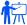

My name is Reza Jooyandeh (Mohammadreza Jooyandeh officially). It is a Persian name natively written as رضا جوینده which means elation (Reza) and searcher (Jooyandeh). It's roughly pronounced as [rezäː 'ʤuːjændeʰ] in IPA ASCII transcription.
I am a Mathematician by mind and a Computer Scientist by heart. I did two Bachelor degrees in Computer Science and Mathematics, followed by a Master in Computer Science at Amirkabir University of Technology. Then I did my PhD in Computational Graph Theory (Computer Science) at Australian National University. As a PhD student I was working on isomorphism testing of plane graphs and isomorph-free exhuastive generation of graphs under supervision of Prof. Brendan McKay.
More about me:
- My detailed Resume.
- My passion is to bridge research and high-tech to industry work. A lot of amazing studies and researches are being done every day that never get to people's hand. My objective is to improve people's quality of life by bringing high-tech research into the software industry.
- My other passion is to teach and mentor. An aha moment makes my day.
Aug 2015:  Grand Prize, Microsoft //oneweek Hackathon 2015, OneNote for Learning, Microsoft Wide.
Grand Prize, Microsoft //oneweek Hackathon 2015, OneNote for Learning, Microsoft Wide.
Aug 2016: 1st Prize in Mobile End Points Category, Microsoft //oneweek Hackathon 2016, Microsoft Wide.
May 2006:  Silver Medal, 30th Nationwide Mathematics Contest for University Students, Iran.
Silver Medal, 30th Nationwide Mathematics Contest for University Students, Iran.
May 2005: Silver Medal, 29th Nationwide Mathematics Contest for University Students, Iran.
Jul 2005: Honorable Mention, 12th International Mathematics Olympiad for University Students, Bulgaria.
Oct 2010: 1st prize in Microsoft - ANU ImagineCup Game Camp, Australia.
Dec 2004: Honorable Mentioned, 29th ACM / International Collegiate Programming Contest, Asian Region, Tehran Site.
Jun 2007:  1st rank of total grade among M.Sc. Students in All Majors of Amirkabir University of Technology, Iran.
1st rank of total grade among M.Sc. Students in All Majors of Amirkabir University of Technology, Iran.
Dec 2012: Best Student Presentation Award, at the 36th Australasian Conference on Combinatorial Math & Combinatorial Computing, Australia.
May 2006: 4th rank, M.Sc. Nationwide Entrance Exam in Computer Science, Iran.
Jul 2003: 7th team rank, Robocup Rescue Simulation League, Italy.
More details on my Resume page...
I was born in Iran, but having lived in Asia, Oceania, Europe and North America, I consider myself a citizen of the world; although I need to live in Africa and South America too truly be a citizen of the world.
In 2014, I moved to Vancouver and started working at Microsoft in which I had the pleasure to work on several amazing projects:
-
Seeing AI (2016)
Seeing AI helps people with visual impairment or blind to "see" the world around them. I have been the coach of the amazing team of interns who were working on this projects. The video below about Seeing AI was featured in the Keynote of //build/ 2016 conference and was presented by Satya Nadella, CEO of Microsoft. -
Learning Tools for OneNote (2015-2016)
This project started as a hackathon project in the Vancouver office and after expanding cross border and collaboration with Natural Language Processing team of Microsoft Research, Accessibility and several other amazing teams in Microsoft, ended up winning the grand prize of the worldwide Microsoft //oneweek 2015 hackathon. Learning Tools for OneNote help everyone improve their reading and writing skills, including gifted learners, students with learning differences or a combination of any of the broad range of unique student abilities. -
Sticky Notes (Since 2015)
Currently, I am working on the Sticky Notes. We are building a smart and ubiquitous note-taking app to be right under your fingertips whenever you wanted to jot something down while being as comfortable as pen and paper. -
OneNote (2015)
Microsoft OneNote is a comprehensive, cross-platform, collaborative note taking app with the support of stylus and deep integrations with Office suite. I used to work in the Storage, Sync and Collaboration team of OneNote. Also as a part of an internal hackathon project I worked on detecting shapes in OneNote which was later picked up by one of our team and is now officially released.
Back in 2005-2008 I was working in a startup, Sourena Software Group which I was a co-founder of and I got to work on some amazing projects including a smart stock trader (FidoFa) and a word processor for some Braille embossers to be used by the division for the National Organization for Blind of the Ministry of Education of Iran for printing books in Braille to be used in schools nationwide. Speaking of Braille, here is how my name looks like in Braille:
- Graph Lab
- Graph Generation, my research field.
- Prof. Brendan McKay was my PhD supervisor. He is one of the co-authors of nauty-traces, the fastest isomorphism testing and automorphism computation known algorithm. He is also working extensively of generation of several families of graphs and has some datasets of them on his website.
- Brendan McKay's Combinatorial Data
- Gemini Graph Library, a small C# library I wrote for graphs.
- Gemini Random PolygonGenerator, an online random simple polygon generator.
- The House of Graph, database of interesting graphs.
You can find me on GitHub, LinkedIn, Google Scholar, Twitter.
I wonder if you find what you are looking for here, so feel free to contact me at JavaScript must be enabled to display this email address..